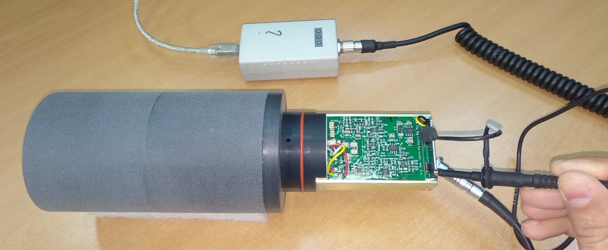
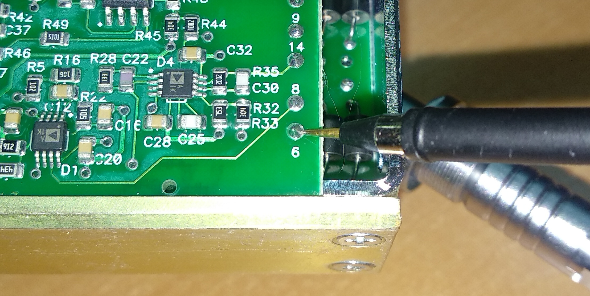
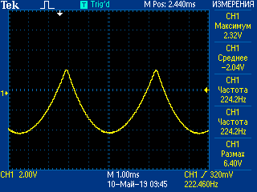

-
Конденсаторы!!!
-
Присвоить порядковый номер, занести в перечень
-
Проверить прошивку, при необходимости перепрошить (ССЫЛКУ)
-
Подключить питание — подключить БД через USB-адаптер. Проверить ток потребления

-
Убедиться в работоспособности высоковольтного источника питания
Осциллографом проверить сигналы STU в точке 6 платы преобразователя импульсов:


Сигнал должен быть вот таким:

-
Статиком измерить значение высокого напряжения Uв в точке 2
этой платы. Оно должно находиться в диапазоне 1090-1120В
Если напряжение не входит в диапазон — следует подобрать резистор R8
-
Собрать рабочее место
Что ещё за LEGO?
Эффективность регистрации быстрых нейтронов детекторами в сотни раз меньше, чем тепловых,
поэтому быстрые нейтроны предварительно замедляют в парафиновом блоке, окружающем нейтронный
детектор.
-
Выставить требуемую амплитуду счетных импульсов нейтронного счетчика (~1,1В) на входе
компаратора К1
(вывод 3 микросхемы D8)
- запаять отрезок проволоки мм-0,5 длиной не менее 10 мм а лучше
— контакт PLS точку КТ1 и подать сигнал с этой точки на вход АЦП
(блок детектирования обязательно должен быть закрыт экранирующим
кожухом)
- расположить контрольный источник нейтронов рядом с блоком детектирования
- в течении примерно 5 мин снять амплитудное распределение нейтронных импульсов и определить
номер канала N, соответствующий пику тепловых нейтронов
- пик тепловых нейтронов N (при параметрах АЦП: код усиления — 110, нижний порог —
100, верхний порог — 4000) должен находиться в канале No 259 (+5% -3%),
в противном случае необходимо изменить коэффициент усиления линейного усилителя ЛУ2(D6) с
помощью резистора R36(грубо) и R37(точно). Чтобы уменьшить канал, нужно увеличить
сопротивление.
-
-
-
-
-